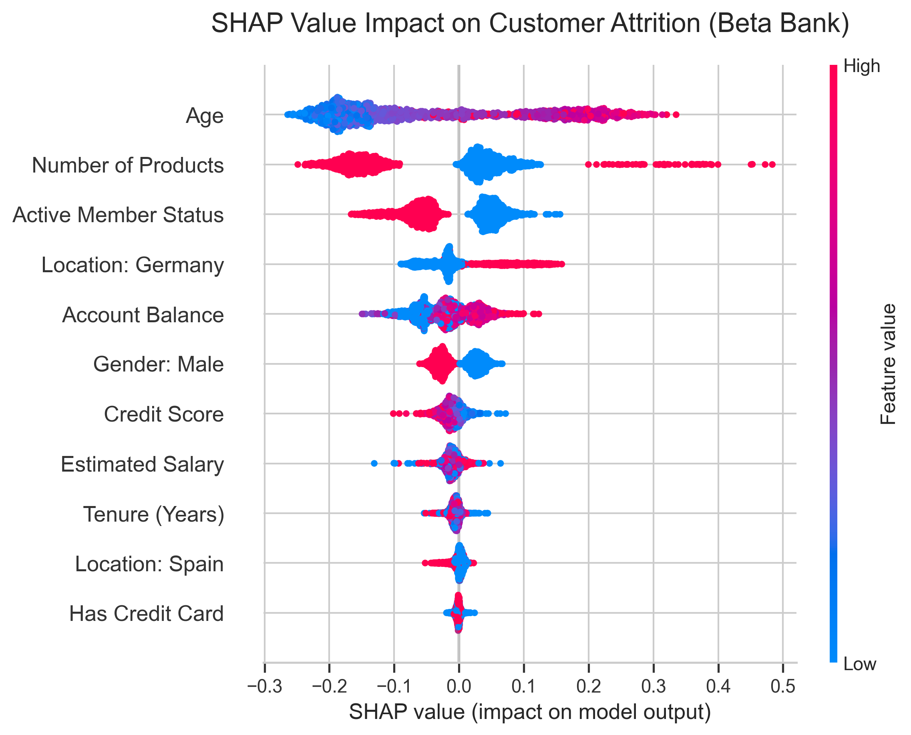

About Me
My Journey
I am a Data Scientist currently completing a professional specialization in Statistical Analytics and a rigorous program with TripleTen. My background in Biology provided me with a strong investigative foundation, which I now apply to the complex data architectures of the financial world.
I focus on bridging the gap between raw data and strategic decision-making, specifically within Risk Analysis for the Banking and Fintech sectors. I specialize in developing explainable models that reveal the "why" behind behavioral and financial trends.
Beyond my technical pursuits, I am a dedicated problem solver who enjoys diving into data patterns to mitigate risk and optimize ROI in high-stakes environments.
Statistical Analysis
Specialized in probability, regression, and hypothesis testing.
Machine Learning
Predictive modeling focusing on Churn and Risk Analytics.
Fintech & Banking
Data-driven solutions specifically for the financial sector.
Explainable AI
Decoding complex models using SHAP for business transparency.
My Resume
My Professional Resume
Data Scientist specializing in Statistical Analytics & Risk Management for the Banking and Fintech sectors.
Featured Projects

Predictive Modeling & XAI for Bank Customer Attrition
Business Impact: Developed a Random Forest pipeline to predict customer churn. Leveraged Explainable AI (SHAP) to decode the model, revealing that older, inactive clients in Germany present the highest attrition risk. This insight enables the bank to deploy targeted retention campaigns, protecting baseline revenue.
Statistical Analysis of Financial Data
Objective: Validating transaction trends through probability distributions to ensure data-driven decision-making in digital product launches and risk assessments.
Technical Expertise
Core Tech & Languages
Data Science & ML
Statistical Analytics
BI & Risk Tools
Get In Touch
Let’s build something data-driven together.
I am currently open to new opportunities in Data Science and Risk Analysis within the Banking and Fintech sectors. Whether you have a specific inquiry or just want to connect, I'd love to hear from you.